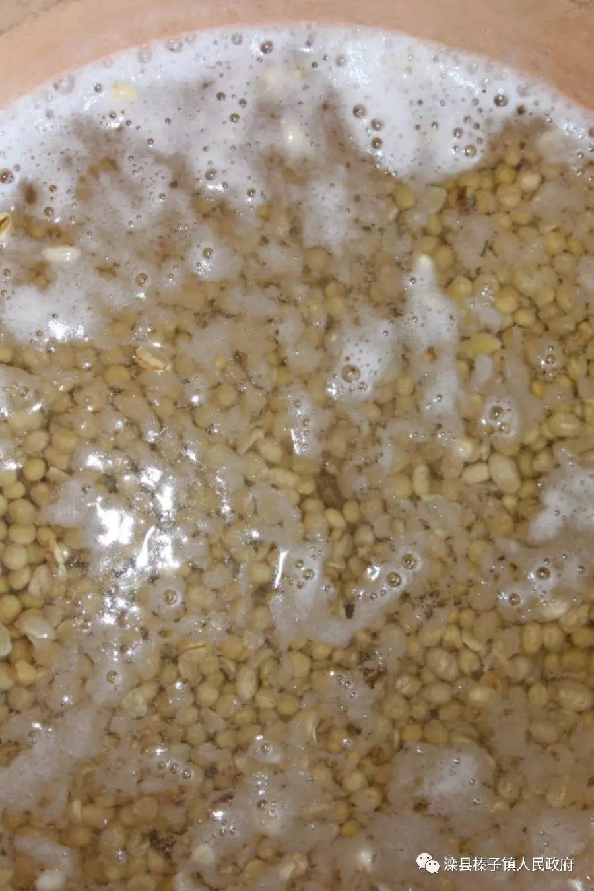
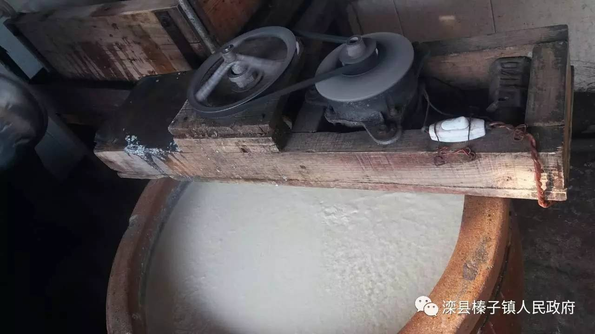
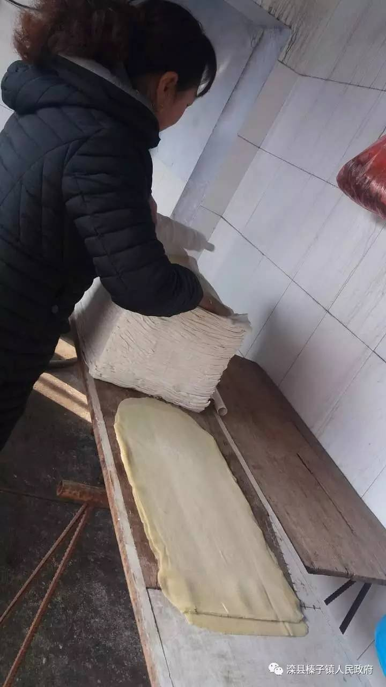
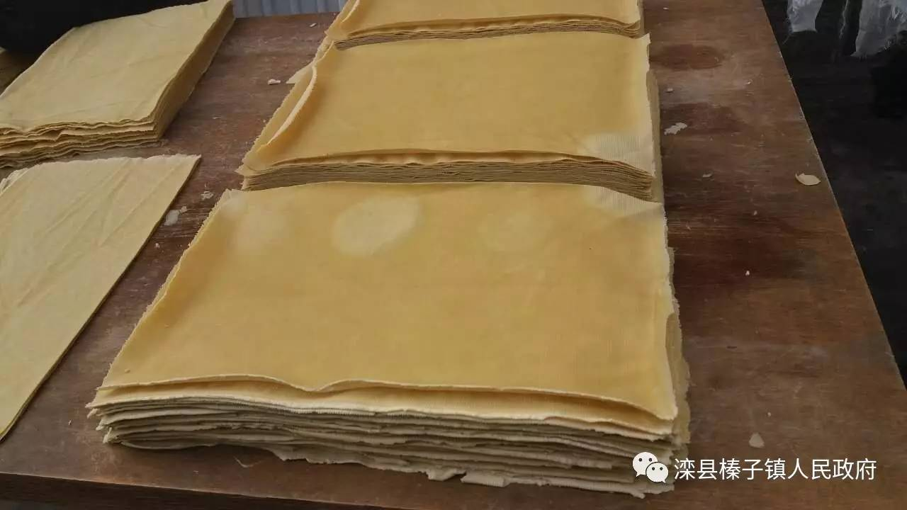

榛子镇美食与您有约——榛子镇豆片 美食留乡愁

说起榛子镇豆片，当然还要从榛子镇说起。榛子镇是一座有着千年历史积淀的“京东四大名镇”之一，位于滦县西北部，与古冶、开平、丰润接壤，交通区位优势明显，京哈高速、102国道、大秦和京坨铁路横贯境内，并设有京沈高速榛子镇出口。榛子镇以前称为榛子岭，因地理位置重要，到清朝中叶，经济繁荣，清朝皇家还在这里修建了行宫，供皇家人员寓居。设立了驿站办理皇差，后来又派驻了“巡检署”等官方机构，成为滦州西部政治经济文化中心，被誉为“京东巨镇”。全镇面积97.6平方公里，辖59个村委会和2个居委会，经济较为发达，素有滦县工业大镇之称。榛子镇地势平坦，土地肥沃，水质甘甜，农业生产自然条件优越，榛子镇豆片就是榛子镇独特的、享誉全国的美食之一。


榛子镇豆片一直保持着传统作坊的特点，全镇豆片加工户达到几百家，正是这种传统的做法才使豆片保留着独有的味道，它的特点就是味香、光滑、细腻、口感好，这与古镇天然的优质水源有着很大关系。还有榛子镇豆片对制作工序要求严格，绝对纯手工制作，才能保证纯正的口味。每户做豆片都要在前一天选好黄豆，用水泡上十几个小时第二天3点左右开工，开始磨豆、出浆、烧浆、过滤、点浆、泼浆、压形、出干豆片、煮干豆片，直到豆片出锅大概十几道工序10个小时左右才能完成，农户用的基本都是传统的大号铁锅煮豆片，每到豆片出锅，香味就会飘出很远，四邻五舍几乎都会知道豆片出锅了。

从早晨开工到豆片出锅，每户都要忙到下午1点左右，所以要吃上新鲜的美味就得耐心的等待，但是当你把刚出锅的豆片放入嘴里的时候，真的感觉美味绝伦---好吃，再卷上一根大葱，更是地地道道的享受美食，这就是几百年的传统味道，家乡的味道。


其实说起榛子镇豆片这里还有一个留传至今的小典故，传说一次乾隆皇帝到盛京祭祖，途经榛子镇时在一家客栈用膳，店家将自己用黄豆研制加工成的轻薄的豆浆皮数十张叠加在一起和一根葱端上了桌，皇上有些惊讶的问“这是什么菜”？店家也不知道取什么名字好，慌忙之中就随口说了句“豆片卷大葱”，皇上和大臣吃了一口赞不绝口。豆片细腻光滑伴有清香，加上葱的腥辣，非常独特的风味，让人流泪，但又因豆的细腻清香使心里在有种泪流暖心的感觉，乾隆走时赏了店家一句话“榛子镇豆片 清香如花”。
虽然只是一个传说，我们也无法考证它的真实性，但是榛子镇豆片卷大葱的吃法仍然保存至今，而且成为一种最搭的吃法，看见豆片就会想到大葱，这也让更多的榛子镇游子们留下了一些家乡的记忆。
榛子镇在外无论是任职，投资置业，经商做买卖的，务工的等等只要是背景离乡的游子每每回到家乡，都会买点豆片吃，感觉一下家乡的味道，回家不吃豆片等于没回家，等走的时候还要买上大量的豆片送给朋友，让更多的人品尝到家乡的美食。
其实榛子镇豆片还有好多传统的吃法，切成丝，拌豆片，尖椒炒豆片，鸡味豆丝、做成豆皮等等，已经成为榛子镇一道道最纯正的家乡味道。
榛子镇豆片流传至今，也在不断的更新品质与质量，成为榛子的美食一绝，并形成了榛子镇的百年老味道，记载着榛子镇悠久历史，品榛子镇豆片，留下古镇乡愁。
榛子百年作坊豆片与您有约，只要您来我们就送。联系我们吧！千年古镇欢迎您。
美食品尝电话：18713867806 韩先生